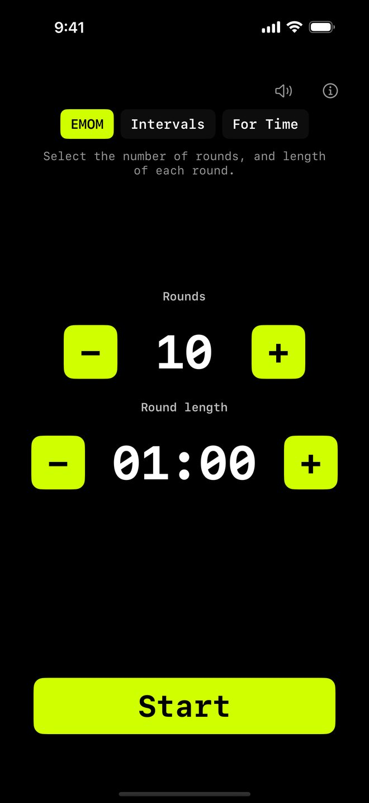

Every Minute on the Minute
EMOM Timer
for CrossFit
Choose 1–120 rounds with round lengths from 0:30 to 9:30 (30-second increments). Press Start. A 10-second countdown gets you ready, then the timer runs with sound cues at every round transition. Available on 5 Apple platforms. No account, no subscription, no ads.
Download on the App Store iPhone · iPad · Apple Watch · Mac · Apple TV
What is EMOM?
EMOM stands for Every Minute on the Minute. You start a set of exercises at the beginning of each minute. Whatever time remains is your rest. When the next minute starts, you go again.
It's the backbone of CrossFit programming. EMOMs enforce consistent pacing and reward efficiency. If your set takes 40 seconds, you get 20 seconds of rest. If it takes 55 seconds, you only get 5.

How EMOM works in WODrounds
-
1 to 120 rounds
Set anything from a quick 5-round warmup to a 120-round endurance grind. Large numbers, one tap at a time.
-
Custom round length
Default is 1 minute, but you can set 30 seconds up to 9:30. This means E2MOM, E90S or any custom interval you need.
-
Sound + haptics
Audio cue at each round start. Haptic feedback on round transitions. Voice cues at the halfway point and with ten seconds left, plus a 3-2-1 countdown into each round.
-
iPhone → Watch
Start on iPhone, follow the countdown on Apple Watch. Same round, same time. Or run standalone on the Watch.
Example EMOM workouts
Beginner EMOM (10 min)
EMOM · 10 rounds · 1:00 each
- 5 push-ups
- 10 air squats
- Rest for the remainder
E2MOM Strength (20 min)
EMOM · 10 rounds · 2:00 each
- 3 heavy deadlifts
- 5 strict pull-ups
- Rest until the next 2-minute mark
Conditioning EMOM (15 min)
EMOM · 15 rounds · 1:00 each
- Minute 1: 10 kettlebell swings
- Minute 2: 8 burpees
- Minute 3: 12 box jumps
- Repeat 5 times
Start your EMOM
Available on iPhone, iPad, Apple Watch, Mac and Apple TV.
Download WODrounds No account needed. Works offline.Related
-
Tabata Timer →
20 seconds on, 10 seconds off, 8 rounds. The classic Tabata protocol in WODrounds.
-
Interval Timer →
Custom work and rest periods with any number of rounds. For HIIT, circuits and conditioning.
-
EMOM Workout Examples →
5 ready-to-use EMOM workouts from beginner to advanced. Copy the settings and go.
-
For Time Timer →
Count up from zero and race the clock, with an optional time cap. For classic For Time WODs.
-
Timer Guide →
Learn when to use EMOM vs. intervals vs. Tabata vs. For Time and how to set up each format.